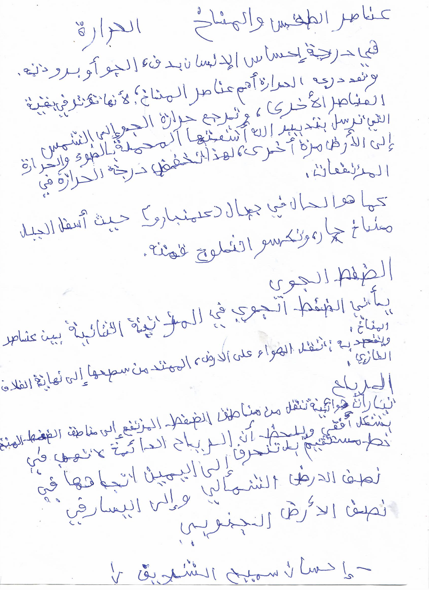

يُعرّف الطقس على أنّه التغيّرات الحاصلة في الغلاف الجوي
في أيّة لحظة، والتي عادةً ما تكون ملموسةً من يوم إلى آخر أو من أسبوع إلى آخر
تغيّرات الطقس مثل تغيّر شدّة الإشعاع الشمسي، أو تساقط الأمطار والثلوج
والبَرَد، أو تشكّل الغيوم، أو هبوب العواصف الرعدية، جميعها تغيّرات تؤثّر على حياة الأفراد وأنشطتهم بشكل مباشر. فالطقس يُمكن أن يتغيّر بين لحظة وأخرى ومن موسم إلى آخر، تبعاً لعدد من العوامل الجويّة مثل: درجة الحرارة، والضغط الجوي، والرياح، والرطوبة، والهطول، وتشكّل الغيوم. تُعتبر دراسة هذه العوامل المتغيّرة بالإضافة إلى معرفة العمليات الأساسية في الغلاف الجويّ مرجعاً أساسياً لعلماء الأرصاد الجويّة في دراسة الطقس والتنبّؤ به في المستقبل القريب. وفيما يلي عناصر الطقس الرئيسية وأثرها:
الحرارة
تُعتبر الحرارة (بالإنجليزية: Temperature) إحدى أهمّ عناصر دراسة الطقس، حيث إنّها تتفاوت بشكل كبير ما بين الليل والنهار عندما تكون السماء خاليةً من الغيوم، بينما يُساعد تواجد الغيوم على الثبات النسبي ومحدودية التغيّر في درجات الحرارة ما بين الليل والنهار. كما ترتبط درجات الحرارة باتجاه الرياح وحركتها؛ ففي النصف الشماليّ من الكرة الأرضية عادةً ما يؤدّي هبوب الرياح الجنوبية إلى ارتفاع في درجات الحرارة، أمّا الرياح الشمالية فيتبعها انخفاض في درجات الحرارة، وينعكس ذلك في النصف الجنوبيّ من الكرة الأرضية.
الرطوبة
تعرّف الرطوبة (بالإنجليزية: Humidity) بأنّها كمية بخار الماء الموجود في الهواء، وعادة ما يحتوي الهواء الدافئ على كميّات أكبر من بخار الماء مقارنةً بالهواء البارد. أمّا الرطوبة النسبية فهي النسبة بين كميّة بخار الماء الموجود فعلاً في الهواء عند درجة حرارة معيّنة وأقصى كميّة ممكنة من بخار الماء يُمكن أن تتواجد في الهواء عند نفس درجة الحرارة والتي تعُرف بدرجة التشبّع. ويُمكن أن تتفاوت نسب الرطوبة في الهواء بين ما يُقارب صفر كما في الصحارى و100% في حالات الضباب والهطول المطريّ. هناك مقياس آخر يُستخدم لقياس الرطوبة في الهواء وهو درجة الندى (بالإنجليزية: Dew point) وهي درجة الحرارة التي تصل فيها الرطوبة النسبية لنسبة 100% أيّ أنّ الهواء يكون مشبعاً تماماً ببخار الماء.
الغيوم
تُعتبر الغيوم (بالإنجليزية: Clouds) من المكوّنات الأساسيّة للطقس وعاملاً أساسياً في تغيّراته. تتكوّن الغيوم من قطرات الماء المتكاثفة أو من بلورات ثلجية صغيرة في السماء، نتيجة تصاعد بخار الماء الموجود في الغلاف الجويّ إلى طبقات الجو العليا والتي يكون عندها الهواء أكثر برودة، ممّا يُسبّب بدء تكاثف قطرات الماء على أجسام دقيقة؛ كذرّات الغبار، أو بلورات الجليد، أو حبيبات ملح من البحر، ممّا يؤدّي إلى زيادة حجمها.
تُصنّف أنواع الغيوم بأكثر من طريقة:
الطريقة الأولى: تصنيف الغيوم بناءً على مكان وجودها في السماء، فهناك الغيوم عالية المستوى في السماء، والغيوم منخفضة المستوى التي تكون قريبة من سطح الأرض ويُمكن أن تلامسه لتُشكّل ما يُسمّى بالضباب، والغيوم متوسطة المستوى التي تتواجد بين الغيوم العالية والمنخفضة.
الطريقة الثانية: تصنيف الغيوم بناءً على شكلها؛ فهناك الغيوم السمحاقية وهي غيوم عالية المستوى ومظهرها كمظهر الريش، وغيوم ركامية متوسطة الارتفاع تبدو ككرات قطنية عملاقة في السماء، وغيوم طبقية منخفضة المستوى تمتد على مساحات كبيرة بشكل يُشبه ملاءات السرير.
الضغط الجوي
يكون تأثير الضغط الجويّ (بالإنجليزية: Atmospheric pressure) على حالة الطقس وتقلّباته بسيطاً، لكنّ دراسة تغيّرات الضغط الجويّ الطبيعية كانخفاضه خلال ساعات النهار يُعطي مؤشّراً مهمّاً لحالة الطقس المتوقّعة. على سبيل المثال، يُشير انخفاض الضغط بشكل عام إلى اقتراب عاصفة، أمّا ارتفاعه فيدلّ على اعتدال في الطقس أو استمراره معتدلاً.
من برمجت احسان سميح محمحد احسان الشريف إقرأ المزيد على موضوع.كوم: ما هي عناصر الطقس
تغير الشكل